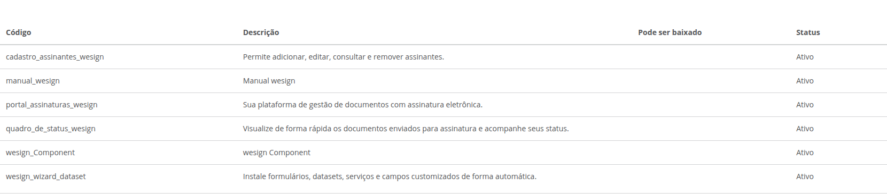

O app utilizará uma licença de usuário para o Usuário do Serviço Callback.
É necessário que os endereços do Portal de Assinaturas não possuam restrições de acesso pelo servidor do fluig. Acesse Serviço de Integração Portal de Assinaturas para maiores informações.
Para realizar a instalação do app Wesign no TOTVS Fluig, é necessário a utilização de um usuário com papel de administrador.
O procedimento deve ser realizado pela Central de Componentes, disponível no Painel de Controle. Após o upload do componente EAR, habilite as widgets da para utilização.
